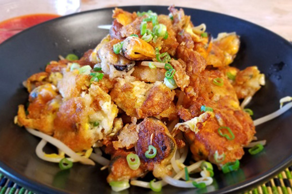
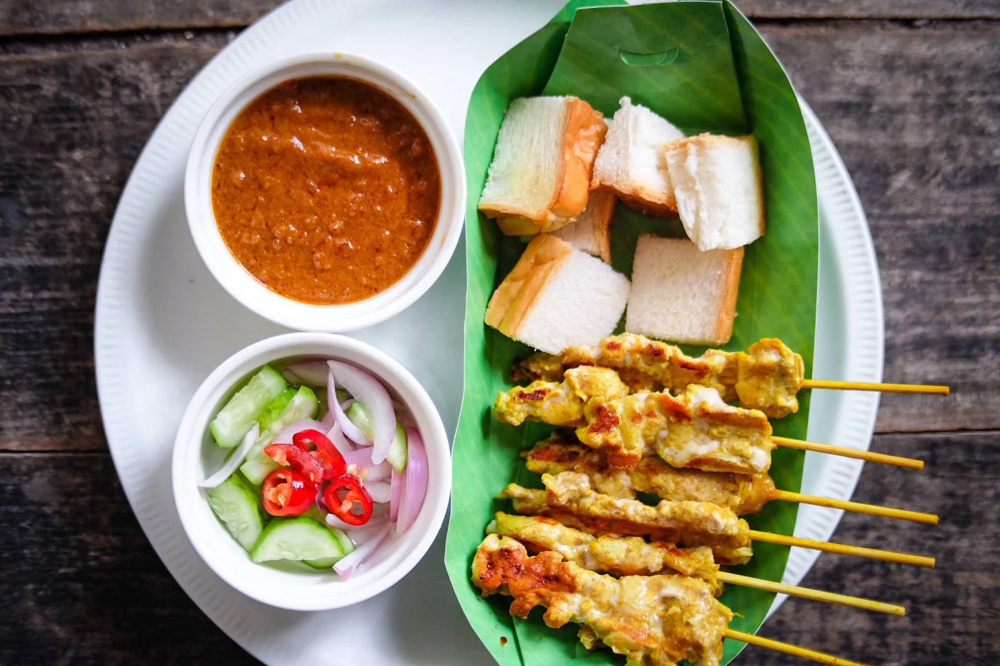

อาหารแนะนำ
-
1. ขนมจีนอยุธยา
ขนมจีนอยุธยา เป็นอาหารท้องถิ่นที่มีรสชาติกลมกล่อม นิยมทานกับน้ำยาหลายชนิด เช่น น้ำยาปลา น้ำยากะทิ
-
2. หอยทอด
หอยทอด อาหารยอดนิยมในจังหวัดอยุธยา โดยใช้หอยแมลงภู่ทอดกับแป้งกรอบ ราดน้ำจิ้มรสเผ็ดเปรี้ยว
-
3. หมูสะเต๊ะ
หมูสะเต๊ะเป็นอาหารที่มีเนื้อหมูหมักหอมกรุ่นและย่างจนหอม เสิร์ฟคู่กับน้ำจิ้มถั่วและขนมปังปิ้ง